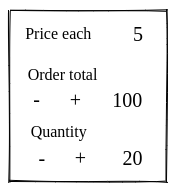
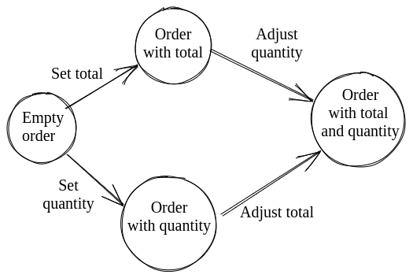

Process flow using phantom types
Sometimes we want to create a process that needs to follow different paths until it reaches an end point. Like a finite state machine.
For example we want an order form where you can change the total or the quantity. When you change any of these two, the other value needs to change automatically.

- When the user updates the total we want to update the quantity
- When the user updates the quantity we want to update the total
These two flows can be illustrated with a state machine:

This is a simple example to illustrate this pattern. This particular example can be done with less ceremony, but in more complex scenarios this pattern is really valuable.
We want to design our code in way that:
- Enforces running through the process steps in the correct order (depending on the user intention)
- Doesn't let us forget a step
Anti-pattern
One possible way of doing this is by creating intermediate types for our process:
type alias InvalidOrder =
{ quantity : Maybe Int, total : Maybe Int }
type alias OrderWithQuantity =
{ quantity : Int, total: Maybe Int }
type alias OrderWithTotal =
{ quantity : Maybe Int, total: Int }
type alias Order =
{ quantity : Int, total : Int }
setTotal : Int -> InvalidOrder -> OrderWithTotal
adjustQuantityFromTotal : OrderWithTotal -> Order
setQuantity : Int -> InvalidOrder -> OrderWithQuantity
adjustTotalFromQuantity : OrderWithQuantity -> Order
Although this is not too bad here, if we were to have more paths and attributes the multiplication of intermediate types would get out of hand really quickly.
Pattern
Phantom types allow us to deal with this in an elegant way.
State machine states
First we need some types to define the state machine states:
type Step step
= Step Order
type Start
= Start
type OrderWithTotal
= OrderWithTotal
type OrderWithQuantity
= OrderWithQuantity
type Done
= Done
The phantom type here is in Step. Note how it defines a step type variable that is not used in the constructor.
Transitions
Then we can create transition functions that use the phantom type to restrict what they take and return.
For example:
adjustQuantityFromTotal : Step OrderWithTotal -> Step Done
This function can only take a Step that is in the OrderWithTotal state. And returns a Step in Done state.
For our order state machine we need these functions:
setTotal : Int -> Step Start -> Step OrderWithTotal
adjustQuantityFromTotal : Step OrderWithTotal -> Step Done
setQuantity : Int -> Step Start -> Step OrderWithQuantity
adjustTotalFromQuantity : Step OrderWithQuantity -> Step Done
done : Step Done -> Order
These functions are state machine transitions. They only allow moving from specific states to other specific states.
Flows
And finally we can build the valid flows using these functions:
flowPrioritizingTotal total order =
Step order
|> setTotal total
|> adjustQuantityFromTotal
|> done
flowPrioritizingQuantity quantity order =
Step order
|> setQuantity quantity
|> adjustTotalFromQuantity
|> done
In this way we can enforce specific processes without creating a myriad of intermediate types.
See a working example here https://ellie-app.com/9SywZggd5m5a1